A tool for every photo you're looking for.
The Toolbox is the app's home tab. Each tool is a one-tap way to point the engine at a job — your own taste, your best shots, a subject, a look-alike, the duplicates, or a place. Pick one, and the results open in Review, ready to swipe.

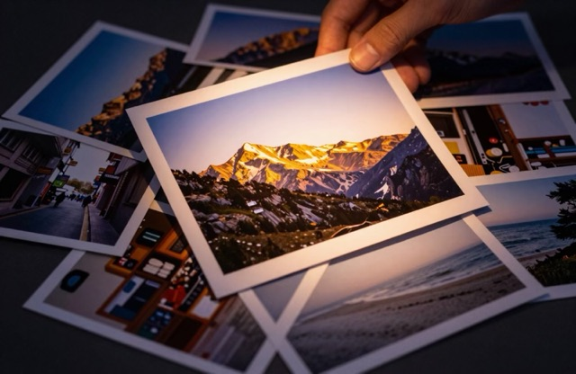


Your eye, as a one-tap sort.
There's nothing to fill in. Pick about 30 photos in normal reviewing and SpectraSort studies what you keep — the subjects, the look, the balance — entirely on your device. From then on, one tap sorts any set of photos by your own taste.
It tells you what it's working from — "Your profile · built from 1,082 photos reviewed" — and even names what it sees: Nature Explorer, Pet Whisperer. It stays under your control: pause learning with a switch, or reset and rebuild whenever your eye changes. Want to name it yourself, shape it, save versions? That's Studio →

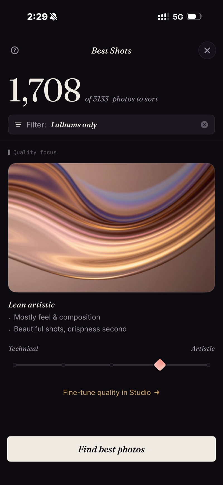
The keepers, up top.
Every photo is scored on seven quality signals — sharpness, exposure, contrast, noise, composition, color, and balance. Best Shots ranks your set by that score and floats the strongest to the top.
A five-step dial tilts the result between Technical — the cleanest, crispest frames — and Artistic — composition, color and mood first. Then one tap: Find best photos.
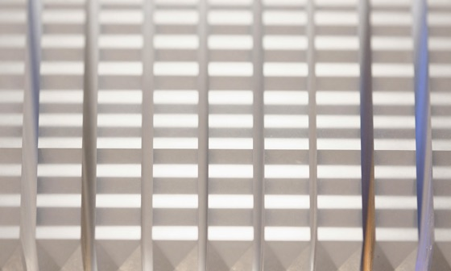
Technical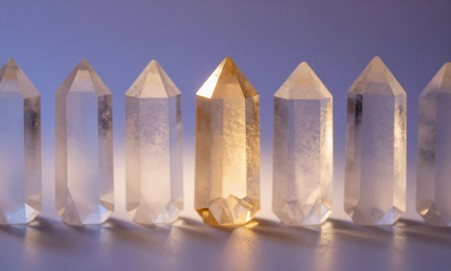
Lean tech.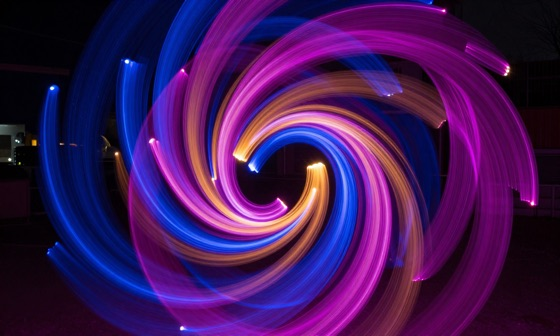
ArtisticThe five steps, each with its own artwork — straight from the app.
Name one thing. Get every photo of it.
Type anything you can put into words — "dogs at the beach", "golden hour", even just "cozy" — or tap a template. One subject at a time, so the results stay honest. It all runs on an on-device model: no cloud lookup, no search history leaving your phone.
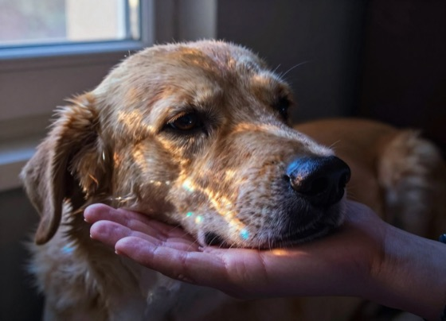
Pets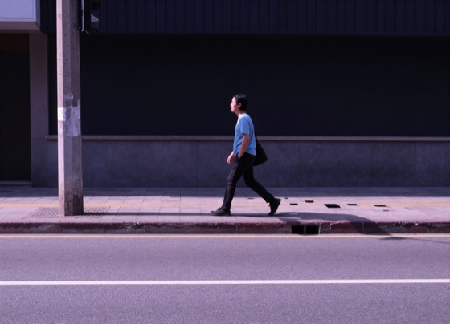
Street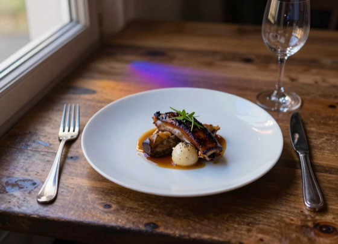
Food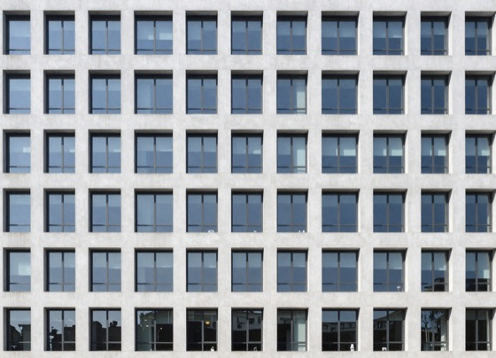
Architecture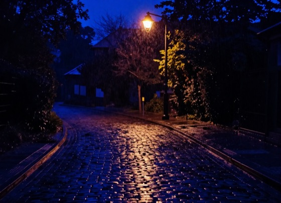
NightThe eight templates and their in-app artwork. Need more than one subject at once? Studio combines up to three →

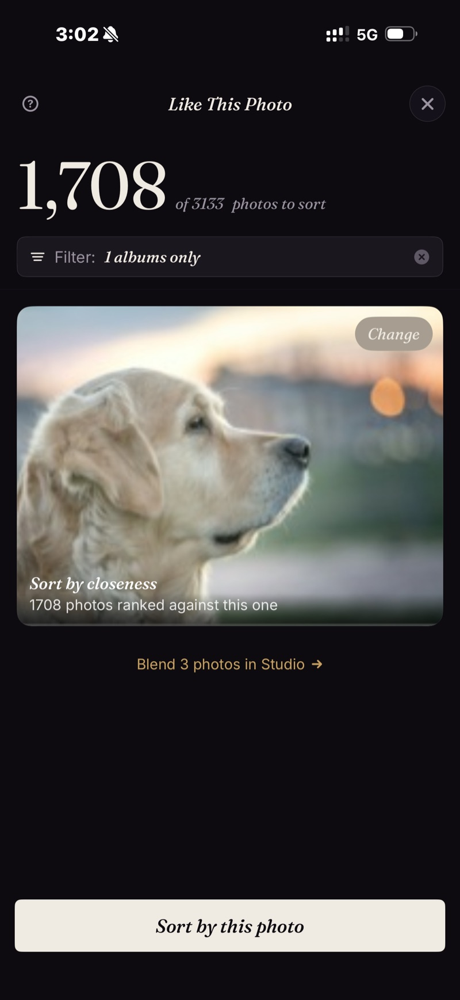
Find more like this one.
Some photos are hard to put into words. Pick one — a mood, a color, a kind of scene — and your whole library is ranked by closeness to it. The nearest matches rise first; change the reference any time.
One photo says what a paragraph can't. And if one isn't enough, Studio blends up to three →
Clear the ten-of-the-same.
We all shoot the same moment a dozen times. Dedupe rounds those sets into stacks with three switches: Duplicates — exact, bit-for-bit copies; Sequence — shots in a series, taken seconds apart; Similar — same scene or subject, different moments.
Tap Review stacks and the grid opens stacks-only — just the kinds you picked, best frame on top. Duplicates are always safe to clear; Sequence and Similar are looser, so you confirm each stack yourself.
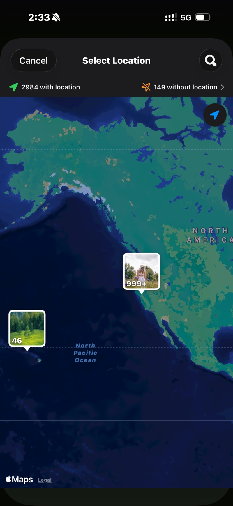
Everything you shot in one spot.
Photos on your phone already carry where they were taken. Search a place or drop a pin, and everything you shot there comes back laid out on a timeline — years down to months down to days.
Pick the trip, the day, or the whole history of that spot, and sort just that. Location lookups stay on your device, like everything else.
Pick a tool. The rest is a swipe.
Every tool feeds the same Review screen. Free to try — iPhone, iOS 18.5 or later.
Download on the App Store